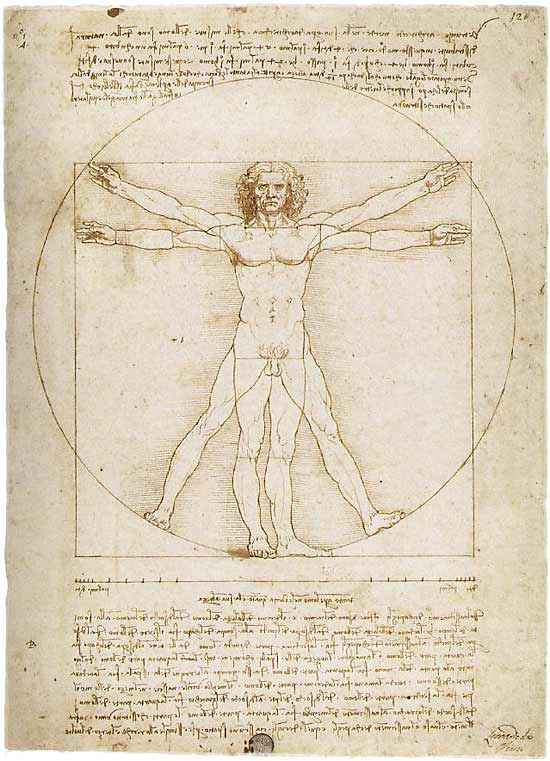

The Vitruvian Man
June 6, 2004 | Comments (0)
This master piece is probably known by everyone, hence I guess no-one knows it has a name! It was drawn around 1492 by Leonardo da Vinci and is about architecture and the proportions of the human body. The man is called after the Roman architect Vitruvius, who believed — like Leonardo — that the proportions of the body should be taken forward into architecture. The drawing is now located in the Accademia di Belle Arti in Venice, Italy. There is a nice article about “The Vitruvian Man and the plannng of temples”
Vitruvian Man; 1492; Leonardo da Vinci
“Those are my principles. If you don't like them I have others.” — Groucho Marx (1895-1977)
Copyright © 2003-2007 Janco Tanis. All rights reserved.
XHTML, CSS, RSS feeds. Powered by Movable Type. Hosted@Home @Slicehost with a domain by hostway.
XHTML, CSS, RSS feeds. Powered by Movable Type. Hosted
Comments
http://www.robtenberge.nl
http://www.robtenberge.nl/animatie4
Find Vitruvian Man 2 on Wikimedia Commons & find
the translation of Leonardos text. Instead of the translation of Marco Pollio Vitruvius. And my correction: 6 feet, instead of 7 !!!